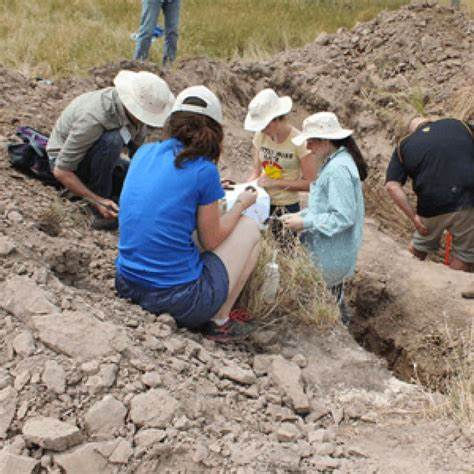

Are you a gold prospector seeking to connect with like-minded enthusiasts, expand your knowledge, and discover new prospecting sites? Joining a local gold prospecting club can be a game-changer, opening up a world of opportunities for learning, adventure, and camaraderie.
Gold prospecting clubs are vibrant communities where members share their passion for uncovering Earth's hidden treasures. They organize field trips to exclusive locations, offer workshops on gold panning and sluicing, host social events, and provide a wealth of resources for prospectors of all levels. Whether you're a seasoned prospector or just starting out, joining a local club can enrich your gold prospecting experience in countless ways.
Why Join a Local Gold Prospecting Group?
- Expanded Knowledge: Learn from experienced members who can share their knowledge of local geology, gold identification, and prospecting techniques.
- Shared Passion: Connect with fellow prospectors who understand your excitement for finding hidden treasures and who are eager to share their own experiences.
- Field Trips & Excursions: Gain access to exclusive prospecting sites on private lands, guided trips to unique locations, and opportunities to collect gold you might not find on your own.
- Workshops & Classes: Develop new skills in gold panning, sluicing, and metal detecting, or learn about mineral identification and field techniques.
- Social Events & Camaraderie: Build lasting friendships, share stories, and enjoy the company of people who share your passion for gold prospecting.
Gold Prospecting Clubs & Groups in the USA
National Gold Prospecting Organizations
Several national organizations support local gold prospecting groups by providing resources, organizing events, and advocating for the hobby:
- Gold Prospectors Association of America (GPAA): This is the largest organization for gold prospectors in the US. It provides resources, promotes education, and organizes national events. Their website features a directory of member clubs, making it a great starting point to find a local group.
- American Mining Rights Association (AMRA): This organization advocates for mining rights and provides resources and support for prospectors. They offer information on regulations, claims, and prospecting techniques.
- Public Lands for the People (PLP): Dedicated to preserving the rights of prospectors to access public lands, PLP offers resources, legal support, and advocacy for the prospecting community.
- North American Prospectors Association (NAPA): This organization focuses on promoting responsible prospecting and offers educational programs, events, and a community for prospectors across North America.
- Lost Dutchman's Mining Association (LDMA): This association focuses on educating and assisting prospectors, offering claims, equipment rentals, and a variety of events.
Regional Gold Prospecting Groups
Northeast
Connecticut:
- Connecticut Gold Prospectors (CGP): Based in Middletown, CT, this club offers field trips, workshops, and a monthly newsletter.
Maine:
- Maine Gold Prospectors (MGP): This statewide organization offers a wealth of resources, including field trips, workshops, and publications, for prospectors of all levels.
New York:
- New York Gold Prospecting Club (NYGPC): This club, based in New York City, hosts monthly meetings, field trips, and workshops for prospectors of all levels.
Pennsylvania:
- Pennsylvania Prospectors (PP): This statewide organization offers a variety of resources, including field trips, workshops, publications, and a junior prospector program.
New England:
- New England Gold Prospectors (NEGP): This organization connects gold prospectors across the Northeast, organizing group outings and sharing information on prospecting opportunities.
Southeast
Alabama:
- Alabama Gold Camp: A popular site for prospectors, offering equipment rentals, workshops, and access to prime prospecting areas.
Georgia:
- Georgia Gold Prospectors Association: A statewide organization with multiple chapters, offering field trips, workshops, and an annual show.
- Gold Prospectors Association of Georgia (GPAG): This association promotes responsible gold prospecting in Georgia, offering claims, events, and educational resources.
North Carolina:
- North Carolina Gold Prospectors: A statewide organization with multiple chapters, offering field trips, workshops, and publications.
Virginia:
- Virginia Prospectors: A statewide organization with multiple chapters, offering field trips, workshops, and publications.
Midwest
Illinois:
- Illinois Gold Seekers (IGS): This active club hosts monthly meetings, field trips, workshops, and an annual show.
Michigan:
- Michigan Gold Prospectors Association: This statewide organization hosts an annual show, field trips, and educational events.
Ohio:
- Ohio Gold Prospectors Association: This statewide organization offers field trips, lectures, and workshops on various prospecting topics.
Southwest
Arizona:
- Arizona Gold Prospectors: A statewide organization offering field trips, workshops, and an annual show.
Colorado:
- Colorado Gold Prospectors Club: This club organizes monthly meetings, field trips, and workshops in the Denver area.
New Mexico:
- New Mexico Gold Seekers: This statewide organization offers field trips, workshops, and an annual show.
West
California:
- California Gold Prospecting Association (CGPA): This organization represents many prospecting clubs across California and hosts an annual convention with workshops, exhibits, and field trips.
Oregon:
- Oregon Gold Prospectors: This club organizes field trips, workshops, and an annual show in the Portland area.
Washington:
- Washington State Prospectors: This organization represents many local clubs throughout Washington and hosts an annual show.
Idaho:
- Idaho Gold Club: This statewide organization offers field trips, workshops, and an annual show.
How to Find Other Local Gold Prospecting Groups Near You
Online Directories
Gold Prospectors Association of America (GPAA): Provides a comprehensive list of clubs and societies across the United States.
State-Specific Resources: Many states have geological societies or prospecting clubs with local chapters. Check their websites or social media pages for information.
Local Rock Shops & Gem Shows
These are great places to meet fellow prospectors and inquire about local clubs. Shop owners and vendors are often knowledgeable about the prospecting community in their area.
Social Media
Join gold prospecting groups on Facebook or other platforms to connect with enthusiasts in your area and learn about upcoming events or meetings.
Activities and Events of Gold Prospecting Clubs
- Field Trips: Excursions to collect gold and explore new sites.
- Workshops: Educational sessions on gold panning, sluicing, and metal detecting.
- Annual Shows: Prospecting events where members and the public can buy, sell, and trade equipment and gold specimens.
- Social Gatherings: Picnics, holiday parties, and other social events to build community.
How to Join a Local Group
- Finding a Group: Use online directories, local libraries, and rock shops to find nearby groups.
- Membership Process: Most groups require a simple membership application and an annual fee.
- Benefits: Access to exclusive field trips, educational resources, newsletters, and a network of fellow prospectors.
Take the Next Step!
Don't miss out on the fun and camaraderie of joining a local gold prospecting group. Explore the resources listed above and connect with other enthusiasts in your area. Whether you're seeking knowledge, adventure, or simply the joy of shared passion, a local gold prospecting club can enrich your experience and deepen your appreciation for Earth's treasures.